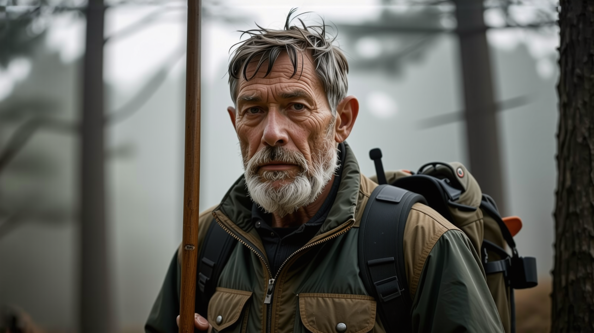
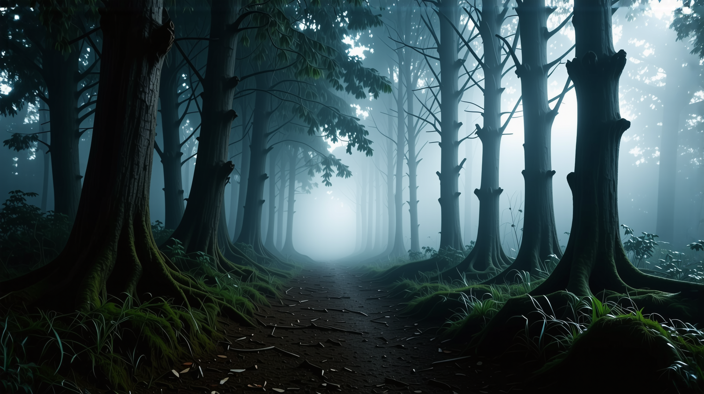
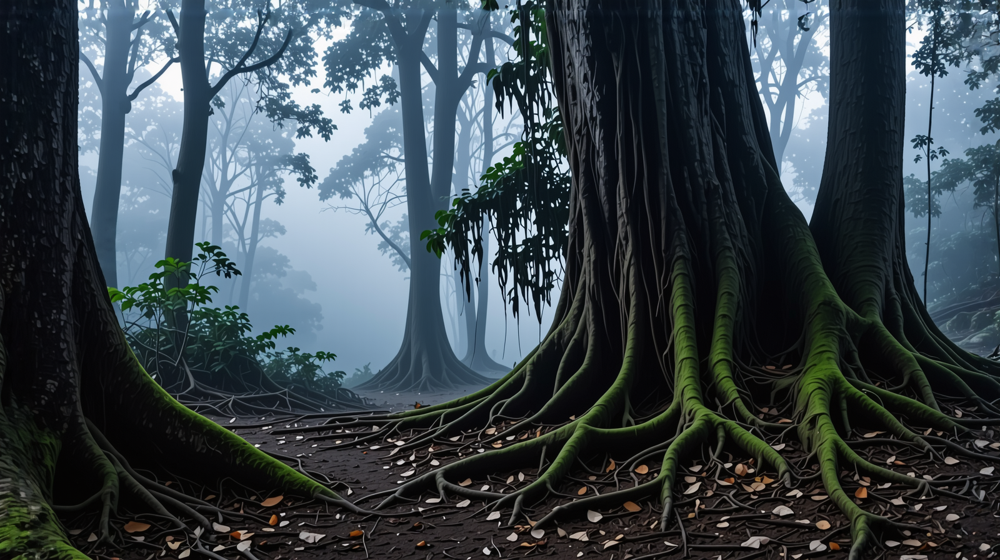
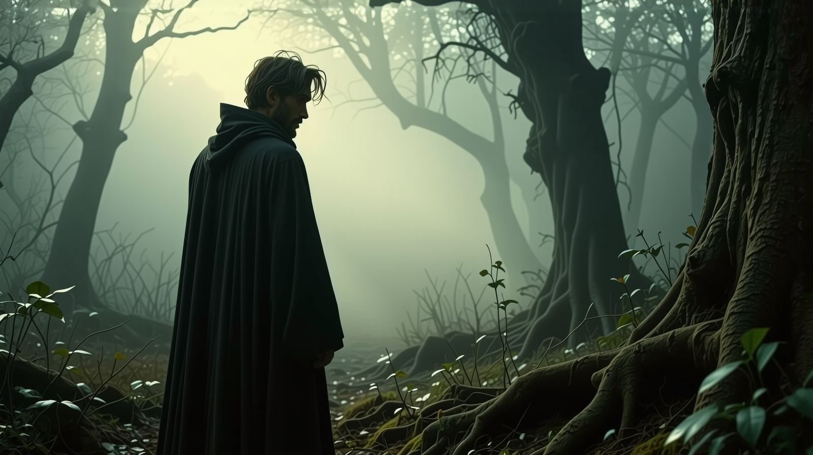

Глава 1: В гората
Исак Търнър беше прекарал живота си в планините, изучавайки всяка ръбка, всяко скрито поточе, всяка хитрост, която природата имаше да предложи. На шейсет и пет години той беше човек с тихо мъдрост, с години на лов и оцеляване, изписани върху всяка линия на износеното му лице. Внукът му, Итан, беше израснал с истории за приключенията на дядо си, винаги нетърпелив да се присъедини към него в някое от известните му ловни пътувания. Сега, на осемнадесет години, Итан най-накрая получава шанс да се докаже.
Ловното пътуване трябваше да бъде ритуал на преминаване — последният сплотяващ момент, преди Итан да замине за университет през есента. Те бяха подготвили запасите си предишната вечер, проверявайки пушките, острейки ножовете и пакетирането на достатъчно провизии за няколко дни в дивата природа. Когато напуснаха селото си рано сутринта, мъглата все още се беше залепила за долината, а ароматът на бор и влажна земя изпълваше въздуха.
Свежият планински въздух изпълваше дробовете на Исак Търнър, докато водеше внука си, Итан, през гъстата боровата гора. Това трябваше да бъде обикновено ловно пътуване — такова, каквото бяха правили много пъти преди. Слънцето се показваше през високите дървета, хвърляйки дълги сенки върху земята, покрита с мъх.
„Остани близо,“ каза Исак, гласът му беше спокоен, но твърд.
Итан, нетърпелив да се докаже, кимна и коригира пушката, закачена на гърба му. На осемнадесет години той винаги се беше възхищавал на уменията на дядо си в дивата природа, като искаше да бъде точно като него. Това беше първото му пътуване сам с Исак и той беше решен да направи всичко възможно, за да се запомни.
Те се движиха внимателно през храсталаците, следвайки слаби следи от еленски стъпки. Исак посочи към огънато малко дърво, сигурен знак, че елен е преминал през това място. Итан се усмихна, усещайки прилив на вълнение. Следенето беше изкуство, което Исак беше усъвършенствал през годините, а сега Итан учеше от най-добрия.
Часове минаха, докато следваха следите по-дълбоко в гората. Земята стана влажна, ароматът на земя и бор беше гъст във въздуха. Птици се обаждаха една на друга в короната на дърветата, а някъде в далечината, дървестницата чукаше по дърво.
Тогава следите изчезнаха.
Исак се намръщи. Той се наведе, сканирайки земята, очите му се движеха бързо от един счупен клон към друг. Еленът беше тук. Но нямаше никакъв знак за това, къде е отишъл.
Итан забеляза колебанието на дядо си. „Всичко наред?“
Исак не отговори веднага. Той стана бавно, поглеждайки наоколо. Дърветата изглеждаха непознати. Той се обърна, очаквайки да види познатия ръб в далечината, този, който винаги ги водеше към дома.
Но го нямаше.
Студено чувство се настани в стомаха му. Той беше ходил през тези гори повече от петдесет години. Знаеше всеки ръб, всяко поточе, всеки път на животните.
Но нещо не беше наред.
„Да,“ каза накрая Исак. „Просто вземам момент.“
Те тръгнаха в посоката, в която Исак беше сигурен, че води към дома. Мина един час. След това още един.
Слънцето беше преминало, но някак си, те се озоваха отново на същото място.
Пред тях стоеше огромно дърво със скривена ствол. Дърво, което бяха преминали преди един час.
Итан се намръщи. „Ние... върнахме ли се?“
Челюстта на Исак се стегна. Това не беше възможно. Той беше поел права пътека. Нямаше начин да са се върнали.
Умът му се въртеше. Може би е сбъркал изчисленията? Не. Това не беше то.
Нещо не беше наред с гората.
Вечерта се спусна над гората и температурата спадна. Исак разпали малък огън, докато Итан събираше дърва, опитвайки се да скрие своето безпокойство.
„Не го разбирам,“ промълви Итан. „Как можеш да се изгубиш? Ти познаваш тези гори по-добре от всеки друг.“
Исак нямаше отговор. Нещо не беше наред. Той беше повторил стъпките им перфектно, но те все пак се връщаха на същото място. Той гледаше как огънят пука, дълбоко в размишления. Вятърът шепнеше през дърветата, като гласове, които шепнат тайни.
„Ще тръгнем при първата светлина,“ каза Исак. „Трябва ни почивка.“
Тази нощ Итан се кълнеше, че е чул стъпки, които обикалят техния лагер. Но когато погледна, не беше никой. После, леко, му се стори, че вижда фигури в далечината — сенки, които се движеха срещу дърветата, наблюдавайки, чакащи.
На следващата сутрин те опитаха отново, но всяка пътека, по която поеха, ги водеше отново към същата полянка. Гората се играеше с тях, сякаш беше жива.
Времето минаваше странно. Един ден изглеждаше като вечност. Запасите им намаляваха, а изтощението се вкопчваше в костите им. Исак забеляза фини промени в дърветата — модели, които не имаше логика, корени, които се извиваха в невъзможни посоки. Той докосна едно дърво и усети пулса под кората, като сърдечен ритъм.
Тогава чуха нещо.
Звук. Нисък шепот, носен от вятъра.
Исак се обърна рязко, ръката му се опря на ловния нож на колана. Итан захвана пушката си, сканирайки дърветата. Шепотът стана по-силен, въпреки че нямаше никого наоколо.
Тогава гората се промени.
Дърветата започнаха да се простират все по-високи, клоните им се протягаха като пръсти към небето. Земята се измести под краката им, корените се извиваха неестествено. Пътеката, по която бяха минали, изчезна, погълната от гората.
Исак стисна юмруци. „Продължаваме да вървим.“
Дишането на Итан беше нестабилно, но той кимна.
Те вървяха. И вървяха.
Часове минаха, но небето си оставаше същото, сиво и мрачно. Нямаше слънце. Нямаше знак за посока.
Тогава те намериха нещо.
Канал. Дълбок, тъмен и непознат. Река преминаваше през него, водата беше странно тиха, въпреки бурното течение. Единственият начин да преминеш беше старо въжено мостче, което се люлееше на вятъра.
„Това не беше тук преди,“ промълви Исак.
Итан се поколеба. „Да преминем ли?“
Исак се вгледа в небето, опитвайки се да усети посоката, но слънцето изглеждаше заклещено на същото място. „Нямаме избор.“
Наполовина по средата на моста, дървото изпука под тяхната тежест. После, изведнъж, силен порив на вятъра премина през канала, разтресе моста яростно.
„Дръж се!“ извика Исак, когато едно от въжетата се скъса.
Итан се вкопчи в дървените дъски, сърцето му туптеше бързо. Точно когато мостът започна да се сгромолясва, те стигнаха до другата страна, паднали на твърда земя. Докато поемаха дъх, глас се разнесе през дърветата.

„Не трябваше да идвате толкова далеч.“
Итан се обърна рязко. Един мъж стоеше на ръба на дърветата, наблюдавайки ги. Той беше по-възрастен, брадата му беше посивяла, а очите му тъмни и знаещи.
Исак застана, поставяйки защитна ръка пред Итан. „Кой си ти?“
Мъжът пристъпи напред. „Елиас Грейсън. И ако искате да си тръгнете, трябва да слушате.“
Исак присви очи. „Какво се случва с нас?“
Елиас въздъхна. „Тази гора задържа тези, които влизат. Някои казват, че е прокълната. Някои казват, че е жива. Така или иначе, никой не напуска, освен ако не намери правилния път.“
Исак не вярваше в проклятия, но нещо ненормално се случваше. „Какъв е правилният път?“
Елиас посочи към изоставеното село в далечината. „Отговорите са там.“
Итан обменя поглед с дядо си. Исак въздъхна, стискайки по-силно пушката си.
Нямаше друг избор.
Те последваха Елиас в неизвестността.